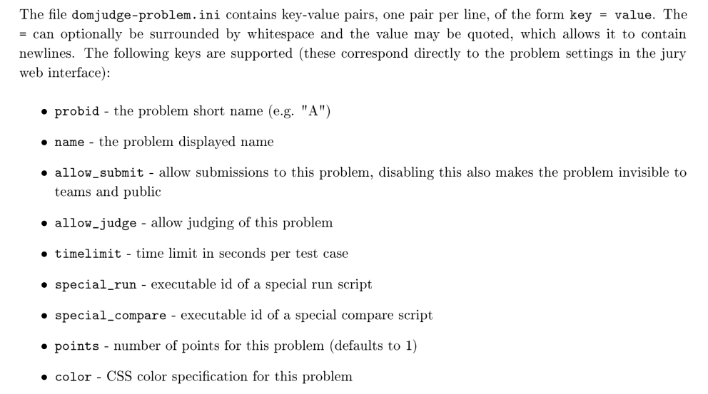
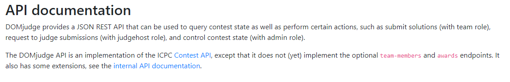

- ACM
我校新生赛也能用上 World Final 同款评测系统啦~
DOMjudge 提供了详尽的官方文档，然而对于博主这种英文弱鸡来说读的很痛苦。前前后后折腾了有两个星期吧，以此文作为避（踩）坑指南。
简介
DOMjudge，作为一款开源的 CCS(Contest Control System)，现已被ICPC钦定为官方的比赛评测系统。比 pc^2 这种闭源而含有诸多 Bug 的 CCS 高到不知道哪里去了啊。

根据官方文档的描述，DOMjudge 的主要特性有：
- 分布式且自动评测的 judge host
- Web 用户界面
- 模块化的系统，方面添加不同的语言/编译器
整个 DOMjudge 主要分为两个部分，Domserver 和 Judgehost，据其名字即可得出它们的功能。需要注意的是，DOMjudge 使用数据库来存放几乎一切数据，所以我们还需配置 MySQL 或者 MariaDB。
安装
DOMjudge 只能运行在 Linux 环境下。博主的运行环境是 Ubuntu Server 18.04 LTS，以及 DOMjudge 7.1.1。
除了传统的安装方式外，DOMjudge 还提供了 Docker 镜像以供安装，这样就大大简化了安装的困难程度。
关于 Docker 的使用这里不作详细描述。（其实是博主也一知半解）
然而官方的 Docker 文档中仅使用了命令来启动容器，为了进一步简化安装，也为了方便修改配置，我决定采用 Docker Compose 。以下是 docker-compose.yml文件：
version: "3"
services:
mariadb:
image: mariadb
container_name: dj-mariadb
environment:
- MYSQL_ROOT_PASSWORD=rootpw
- MYSQL_USER=domjudge
- MYSQL_PASSWORD=djpw
- MYSQL_DATABASE=domjudge
volumes:
- $PWD/data:/var/lib/mysql
ports:
- 13306:3306
command:
- --max-connections=1000
- --innodb-log-file-size=480M
domserver:
image: domjudge/domserver:latest
container_name: domserver
environment:
- MYSQL_HOST=mariadb
- MYSQL_USER=domjudge
- MYSQL_DATABASE=domjudge
- MYSQL_PASSWORD=djpw
- MYSQL_ROOT_PASSWORD=rootpw
- CONTAINER_TIMEZONE=Asia/Shanghai
restart: always
depends_on:
- phpmyadmin
- mariadb
ports:
- 80:80
links:
- mariadb
judgehost:
image: domjudge/judgehost:latest
container_name: judgedaemon-0
privileged: true
environment:
- CONTAINER_TIMEZONE=Asia/Shanghai
- DAEMON_ID=0
- JUDGEDAEMON_PASSWORD=whatthehell
depends_on:
- domserver
links:
- domserver
restart: always
volumes:
- /sys/fs/cgroup:/sys/fs/cgroup:ro
phpmyadmin:
image: phpmyadmin/phpmyadmin
container_name: myadmin
ports:
- 8080:80
environment:
- PMA_HOST=mariadb
links:
- mariadb:mariadb
然后运行 docker-compose up -d 即可完成部署。
Judgehost 利用了 Linux 内核的 Cgroup 特性，所以需进行一步额外设置（似乎部分内核较新的系统不需要）。编辑 /etc/default/grub 文件，将默认的命令改为：
GRUB_CMDLINE_LINUX_DEFAULT="quiet cgroup_enable=memory swapaccount=1"
GRUB_CMDLINE_LINUX="quiet cgroup_enable=memory swapaccount=1"
然后运行 update-grub 并重启。
需要多核判题的话创建多个 Judgehost 容器并修改 DAEMON_ID 为不同的值即可。
目前存在的问题：
- judgehost 用户的初始密码不定，需要手动去 web 端更改并添加
JUDGEDAEMON_PASSWORD的环境变量。（默认环境变量的密码是password） - 整个系统对我来说是个黑盒...
除了 MariaDB , DOMserver , Judgehost 这三个必要的容器外，我还使用了 phpMyAdmin 来进行图形化的数据库管理（备份)。数据库（即 mariadb 容器的数据卷）创建在了当前目录的data文件夹下，方便备份。
其中，Domserver 映射到了主机的 80 端口， phpMyAdmin 映射到了 8080 端口。由于是内网环境，故不准备采用 HTTPS 加密。
需要注意的是，DOMjudge 提供的 Judgehost 镜像中仅包含 C, C++, Java 三种语言的运行环境。
配置
Domserver 部署成功后，即可通过 Web 端来访问了。默认的管理员账号用户名 admin ，默认密码被打印在domserver启动时的日志中，同时也可以用docker exec -it domserver cat /opt/domjudge/domserver/etc/initial_admin_password.secret来获取 。
可以在 Config Checker 中进行配置检查。
C++ 的默认编译选项没有 C++11， 需手动添加。
题目导入
DOMjudge 支持用 zip 格式的压缩包导入/导出题目。
具体的文件结构是：
│ domjudge-problem.ini
│
├─data
│ ├─sample
│ └─secret
│
└─problem_statement
problem.{pdf,html,txt}
在 domjudge-problem.ini 中定义了如下信息：

（懒得翻译了，有时间再补）
在 secret 文件夹中存放测试数据，在 sample 文件夹中存放样例数据， 在 problem_statement 存放题面。
（不知道为什么博主在压缩包内上传题面没有成功过，只能通过 Web 端来上传）
测试数据的扩展名为 .in 和 .ans。
队伍导入
队伍及用户导入采用 tsv(tab-separated values) 格式，即信息之间采用制表符（TAB）分隔。事实上，文件的扩展名并不需要采用.tsv。我们可以直接在Excel中创建一个表格然后将其后复制至一个文本文件中。
格式由 ICPC 官方定义。
teams 格式：
teams 1
team_id external_ID group_id team_name institution_name institution_short_name country_code
参考CSL的博客发现：
在导入teams表的时候，在
Country Code后追加一列，填写Institution External ID。 这步是阅读源代码后猜测的，当时的实际操作是直接在数据库中的team_affiliation用SQL语句更新ExternalID的。
博主采用了这种方式，并在导入队伍后通过 Web 界面手动添加 Affiliation 信息。
事实上，institution_name institution_short_name country_code这三个字段都不是必要的，只需要有External ID就可以。而如果没有External ID的话，会创建和队伍数量一样多的Affiliation。
accounts 格式：
accounts 1
account_type fullname username password
一种（可能）简单的方式是先导入队伍再导入用户，并且用户 username 的后缀数字与 team_id 相同。不需要的字段可以直接留空。（不能缺少分隔符）
tsv 文件可以采用 Excel 生成。在 Excel 中输入完数据后选择另存为文本文件（制表符分隔）即可。
如需使用institution_name institution_short_name country_code 三项需在 Team Affiliations 中提前创建相应的条目。
API
参考官方的 API 说明，DOMjudge 包含 ICPC 定义的 API 和自有的 API。

滚榜
尝试使用官方的 ICPC tools，发现总是提示比赛未结束，查阅日志认为是 DOMjudge 的 event feed 格式与 ICPC tools 提供的 resolver 工具的格式不兼容。
尝试 DOMjura 发现同样不能正确读取 event-feed 。
2019年校赛补充：滚榜采用了 Github 上的这个项目。这比官方的滚榜工具好用多了，但是也有坑。
首先它使用bazel作为构建工具，但是bazel对于Windows很不友好（至少对于这个项目而言），会有奇怪的报错。所以我使用了Ubuntu。其次，由于构建过程中大部分源都在国外，对于国内的网络环境来说很不友好。我的解决办法是使用proxychains代理bazel，实测无需任何配置即可支持Domjudge 7.1.1（2019/12/7）。
2018冬季新生赛概况
闲扯几句。
热身赛一切良好。出题人数据出锅，被批判了一个多小时2333。
正式赛赛前比赛账号导入的时候，有个人是后来添加的，和之前的版本没有对应上，导致部分队伍登录到了后一个队伍的账号，重新导入 team 后发现无法登录，还需导入 accounts。这导致比赛推迟了 5 分钟。
由于 Submission 的输出数据是保留的，而赛前我的服务器硬盘空间本来就不多了，比赛时当服务器的硬盘占用达到 90% 时，所有 judgehost 就都被关了。我只能胡乱删几个软件包腾出空间。还好没有造成大的影响。
然后直到最后还是没有搞出滚榜。
GG。总体来说还是挺顺利的，服务器没有崩，甚至平均 CPU load 只有 1.0 左右，就是感觉比较吃 I/O，还好我用的是固态（~~先见之明~~）。
总结一下，DOMjudge 体验极佳，可以在校赛再推广一波。
2019冬季新生赛概况
由于今年懒得去嫖学校的服务器了，所以打算用公网服务器。本来在GCP和阿里云之间纠结用哪个，给我恰好滑稽给我提供了他在镇江的独服，于是建了一个16C，16G内存的虚拟机用作评测服务器（顺带送了个域名）。
这台服务器的网络结构比较复杂，首先，他是Windows Server，通过一个软件把某些端口的流量转发至一台Debian虚拟机中（为了方便管理证书等），然后由Debian上的Nginx反代至Domjudge的虚拟机中。这样我自己就不用配置证书也能有HTTPS。
但是Windows有一个老生常谈的坑：时间问题。Windows的硬件时钟是本地时间，而Linux为UTC时间，这导致了一开始Domjudge里的时间是假的，需要手动设置。
本次Domjudge的配置基本与之前相同，用Docker-compose一键部署。
之前一直没有做过压力测试一直是我的遗憾，这次在研究了Domjudge的API文档之后，写了一个自动交题的脚本，并且用Locust辅助做压力测试，然后评测机不负众望炸了。。

其实还不止这个错，还有各种奇怪的错误。幸好在正式比赛中评测机表现得很稳健，并没有出锅，应该是压力还不够大。。
比赛时还碰到一个bug，在一道题重测后这道题的一血变更了，但是榜单上的一血是错的，重新刷新榜单也未解决。查看数据库表发现有一张叫scorecache的表，推测该表即为榜单的缓存，于是更改is_first_solved字段后，成功解决。